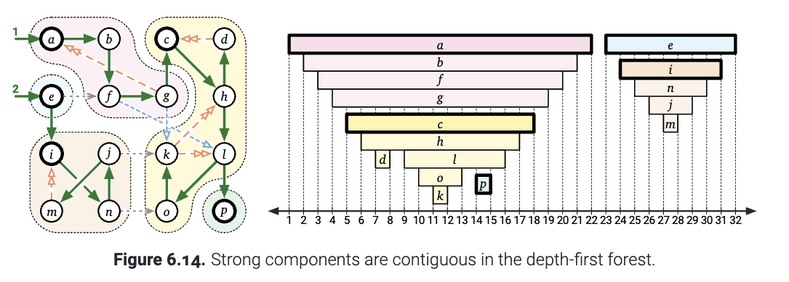
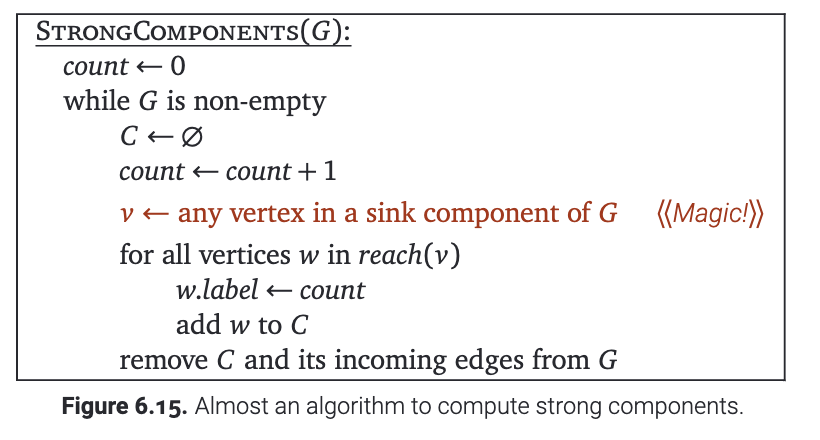
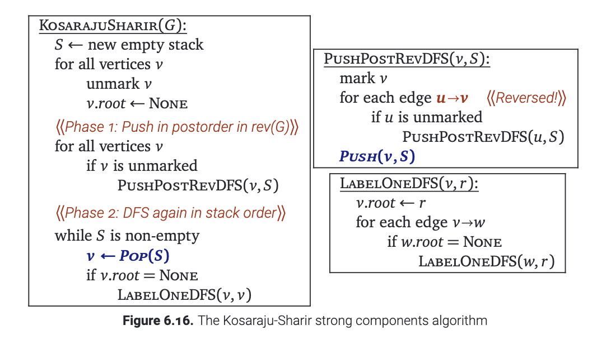
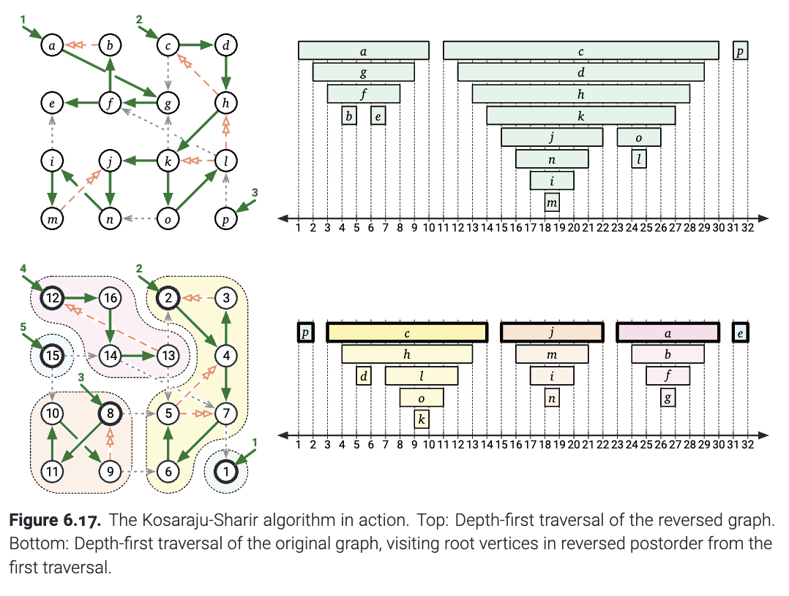
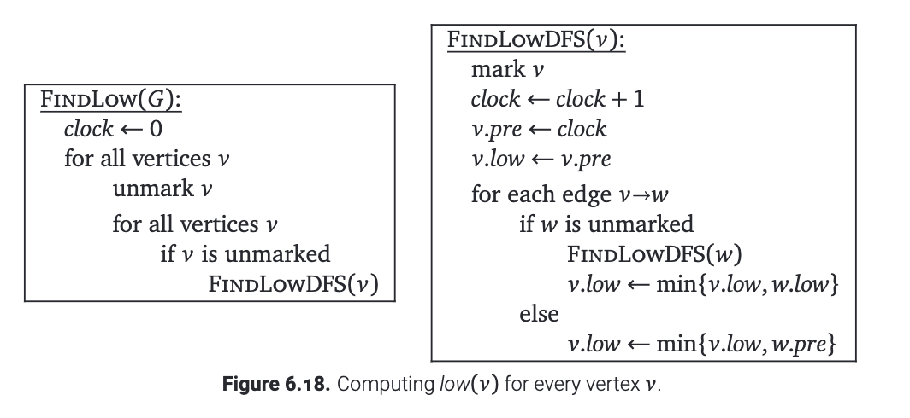
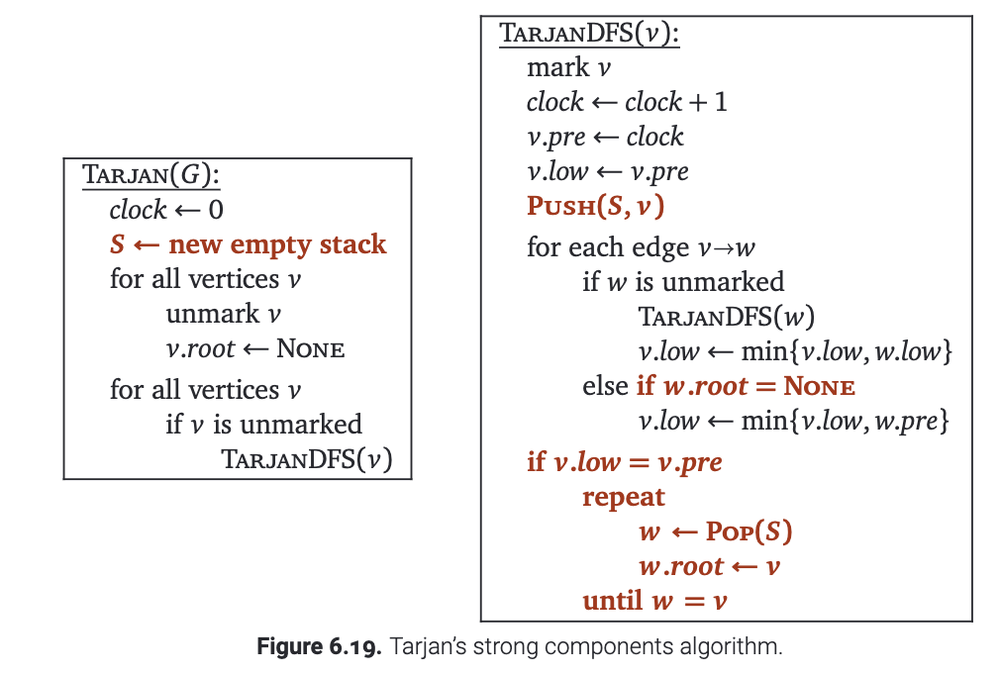

实际上, 有若干种算法可以让我们在$O(V+E)$的时间里面求解强连通分量. 关键就是看下面的这个观察:
引理6.2. 固定有向图$G$的深度优先遍历的顺序. 图$G$的每一个强联通分量$C$包含且仅包含一个在当前联通分量$C$里面没有父亲的节点. (这个节点的父亲可能在其他的强联通分量里面, 也可能根本没有父亲).
证明: 令$C$是$G$的任何一个强连通分量. 考虑属于同一个联通分量的两个点$v,w\in C$以及从$u$到$v$的路径. 在这条路径上, 每一个节点都可以到达$w$, 因此也可以到达$C$中的每个节点; 根据对称性, 这个路径上面的每个节点同样可以到达$v$, 因此也同样可以到达$C$中的每个节点. 因此我们说这条路径上面的每个节点也都在$C$里面.
我们把在联通分量$C$里面开始时间最早的节点记作$v$. 如果$v$有父亲, 那么$parent(v)$就在$v$之前就开始了, 因此不可能在$C$里面.
现在, 令$w$是联通分量$C$中的另一个节点. 在DFS(v)被调用之前, 每一个$C$中的节点都是新的, 因此存在状态为新的节点组成的从$v$到$w$的路径. 根据引理6.1, 我们知道在深度优先遍历形成的森林中, $w$是$v$的子孙, 并且在树边$u\to v$上的每一个节点都会在$C$里面. 也就是, $parent(w)\in C$. $\square$
刚刚的这个引理表明, 有向图$G$的形成的强联通分量中, 每一个强连通分量都是深度优先搜索形成的森林的一个联通的子树. 特别地, 对于每一个强连通分量, $C$中开始时间最早的顶点是$C$中所有顶点的最近公共祖先(lowest common ancestor). 我们称这个节点为联通分量$C$的根.
 (图6.14 强联通分量在深度优先遍历的森林中是连续的)
接下来, 我会介绍两种算法. 它们都会为我们描绘一个直观的轮廓. 对于$scc(G)$的一个联通分量而言, 如果这个联通分量里面有汇点, 那么我们称它为汇分量(sink component). 等价地说, 如果 $C$ 中任何顶点的到达范围恰好只有 $C$, 则 $C$ 是汇分量.我们可以按照下面的方式, 找到图中的强连通分量:

乍一看, 快速地找到一个图的汇分量有点困难. 但是, 如果我们先对它做一次DFS的话, 我们却很容易找到这个图的源分量(source component). 源分量代表$G$经过缩点之后形成的$scc(G)$中, 源点的那个分量.
引理6.3 在图$G$的任何一个后序遍历中, 最后遍历到的节点$v$在$G$的一个源分量中.
证明: 我们先任意取一个深度优先搜索的序列$G$. 定义$v$是后序遍历的最后一个节点. 这样一来, 外围的DFSAll函数最后一次调用DFS一定是DFS(v). 此外, $v$是深度优先森林中一棵树的根. 因此$v$的子孙中任何一个节点$x$, 一定满足$x.post>v.pre$. 最后, $v$是这一部分强连通分量$C$的根.
为了证明方便, 考虑反证法. 假设有节点$x\to y$满足$x\notin C, y\in C$. 并且, $x$可以到达$y$, $y$可以到达$v$. 这样一来, $x$就可以到达$v$. 由于$v$是$C$的根, $y$是$v$的一个子孙. 因此$v.pre<y.pre$. 这样的一条$x\to y$的边保证了$y.pre<x.post$, 因此, $v.pre<x.post$. 这就表明了$x$是$v$的子孙. 但是紧接着$v$可以通过树边到达$x$, 就与我们的假设: $x\notin C$矛盾! $\square$
我们很容易验证对于任何一个有向图, $rev(scc(G))=scc(rev(G))$. 因此, 在$rev(G)$中后序遍历的最后一个节点恰好在$G$的汇分量里面! 因此, 如果我们把图中的边反过来, 然后再按照后序遍历的逆序去调用DFS, 我们就每一次只会调用一个联通分量! (再次提醒: $rev(G)$ 的后序遍历顺序与 $G$ 的后序遍历不同.)
把上面的这些组合起来, 我们就有下图的算法. 这个算法在$O(V+E)$的时间内就可以计算, 标记图中的强连通分量. 这个算法在1978年被Rao Kosaraju发现, 但是他从来没有发表过它. 3年后, 这个算法又被Micha Sharir重新独立发现. (注: 有传言说, 相同的算法甚至在 Kosaraju 之前就出现在俄罗斯文献中, 但我还没有找到这种说法的可靠来源) Kosaraju-Sharir算法有两个阶段: 第一个阶段是在$rev(G)$上面进行深度优先搜索. 当一个节点结束了之后, 就会立即被放到栈上面. 在第二个阶段, 我们可以对原图按照栈上的顺序进行搜索(这时候无论是深度优先还是别的什么就不重要了). 搜索到的节点就会被标记在这个节点包含的联通分量里面.

下图显示了在例图上面运行的 Kosaraju-Sharir 算法. 只需对算法进行少量修改, 我们也可以在 $O(V + E)$ 时间内计算出强分量图 $scc(G)$.
 (图6.17 正在执行中的Kosaraju-Sharir算法, 上方: 反图的DFS; 下方: 原图上的DFS, 按照反图后序遍历的逆序访问节点)
早在1972年, Bob Tarjan发表了一个线性时间计算强连通分量的算法.(注: 据传言, Kosaraju 显然是在一次算法课中发现了他的算法. 他本来应该讲解Tarjan的算法, 但他忘记了Tarjan算法是怎么做的了, 所以他不得不临时补一些东西. 这个故事唯一让我感到惊讶的是没有人提及 Sharir 或 Tarjan. ) 但是这个算法比上面介绍的更加微妙. 直观来看, Tarjan的算法会找到图$G$的一个源分量, 把它"删除", 然后递归继续寻找剩下的强连通分量. 不过, 整个计算过程在一次DFS就可以完成.
对于图$G$的一个给定的DFS顺序, 对于每个节点$v$, 我们把$low(v)$定义为从$v$可以到达的最多经过一条非树边的路径. 我们很明显可以看出: $low(v)\leq v.pre$, 因为$v$可以经过0条树边, 然后经过0条非树边. Tarjan注意到, 汇分量可以被$low$函数完全刻画.
引理6.4 一个节点$v$是图$G$的汇分量的一个根, 当且仅当$low(v)=v.pre$并且对于每个$v$的子孙$u$, $low(w)<w.pre$.
证明: 首先, 令$v$是满足$low(v)=v.pre$的一个节点. 对于$v$的一个节点的子孙$w$, 一定没有$w\to x$并且$x.pre<v.pre$. 另一方面, 节点$v$不可能到达所有满足$y.pre>v.post$的所有$y$节点. 特别的, $v$不能到达它的父亲(如果有的话), 因此$v$是强联通分量的根.
除此之外, 假设$v$的每个子孙$w$还满足$low(w)<w.pre$, 那么子孙$w$就可以到达另一个节点$x$(节点$x$一定是$v$的另一个子孙), 满足$x.pre<w.pre$. 因此, 根据归纳法, 每一个$v$的子孙可以到达$v$. 由此可见，$v$的后代确实包含强联通分量$C$, 其根为$v$. 更进一步, 由于$v$不能到达$C$之外的节点, $C$一定是一个汇分量.
另一方面, 假设$v$是汇分量$C$的根, 那么只有在另一个节点$w\in C$的时候, $v$可以到达$w$. 但 $v$ 可以到达它的所有子孙, 并且 $C$ 中的每个节点都是 $v$ 的子孙. 因此 $v$ 的子孙包含 $C$. 如果对这个联通分量中的其他节点$w\in C$, 如果$low(w)=w.pre$, 那么$w$是$C$的另一个根. 这肯定是不可能的. $\square$
通过深度优先搜索计算每个顶点 $v$ 的 $low(v)$ 非常简单. 在DFS的过程中就可以完成. 见下图.

引理6.4说明了在运行FindLow之后, 我们可以在$O(V+E)$的时间内找出所有汇分量的根. (只要对整个图搜索一次就行了) 然后在 $O(V + E)$ 额外时间内标记并删除这些汇分量(只要从每个汇分量的根考试搜索), 然后我们就可以递归求解别的节点了. 糟糕的事情是, 这个算法可能需要 $V$ 次迭代, 每个只删除一个顶点，这样朴素的操作可能会让总运行时间变为$O(VE)$.
为了加速这个算法, 除了递归的堆栈外, Tarjan 的算法还维护了一个辅助节点的栈. 每当开始访问一个新的顶点 $v$ 时, 就把它压入堆栈. 每当我们访问完一个顶点 $v$ 时, 我们都会将 $v.low$ 与 $v.pre$ 进行比较. 在我们第一次发现$v.low=v.pre$的时候, 就有下列的三个情况:
此时, 我们可以通过将 $C$ 中的顶点一一弹出辅助堆栈来识别它们, 当弹出 $v$ 时, 就可以停止继续弹出了. 我们这时候就得到了联通分量的所有内容.
现在, 我们可以把$C$中所有的节点都删除掉, 然后继续计算剩余图中的联通分量. 但是这就有点浪费了. 因为删除了之后, 再找的时候我们又要把访问$v$之前的那些信息一字不落的算回来. 相反, 我们标记 $C$ 中的每个顶点，将 $v$ 标记为这个强分量的根，然后在接下来的DFS中忽略被标记的顶点. 正是这样, 我们就将将 $low(v)$ 的定义更改为 "与 $v$ 相同的联通分量的所有顶点中, $v$ 可以通过树边路径（后跟最多一个非树边）到达的最小起始时间". 但为了证明正确性，实际上忽略标记的节点并不会影响这个算法的正确性.
最后, 下图展示的是Tarjan的算法. 对于FindLow函数(见图6.18)的更改用加粗的红色标识. 我们要分析算法的运行时间, 可以分为两部分. 由于每个顶点被推入 $S$ 一次, 并从 $S$ 弹出一次. 所以维护辅助堆栈所花费的总时间(红色)是$O(V)$. 如果我们忽略辅助堆栈维护, 这个算法的其余部分只是一个标准的深度优先搜索.因此我们得出结论, 该算法运行时间为 $O(V + E)$.
